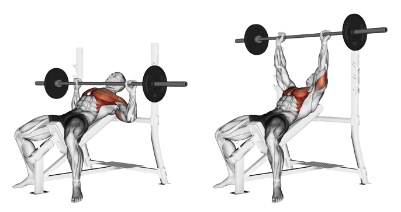
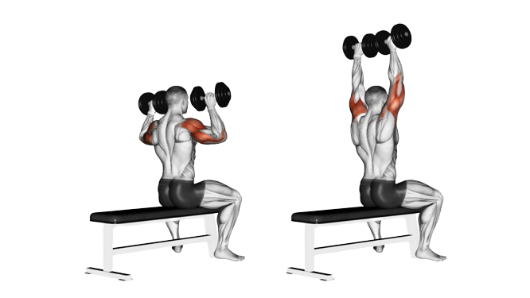
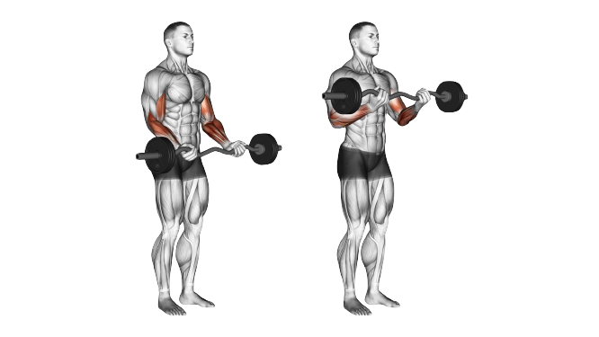

Entrainement
Bienvenue sur la page des entrainements de LIFTLIFE ! Vous souhaitez vous lancer dans la musculation mais ne savez pas par où commencer ? Ou peut-être êtes-vous un pratiquant confirmé en quête de nouveaux exercices et de méthodes d'entraînement ? Chez LIFTLIFE, nous vous proposons un accompagnement personnalisé pour vous aider à atteindre vos objectifs. Vous trouverez ici des planifications d'entraînement en fonction de votre emploi du temps. Vous trouverez également une large gamme d'exercices que vous pouvez faire pour travailler chacun de vos muscles. Si vous souhaitez atteindre vos objectifs de manière efficace et sécurisée vous êtes au bon endroit.
Combien de séances d'entraînement souhaitez-vous faire par semaine ?
Vous avez sélectionné 0 séances par semaine.
Afin d'atteindre vos objectifs quels qu'ils soient, avec 0 séances par semaines. Nous recommandons un programme Full-Body. L'entraînement Full-Body en musculation consiste à travailler tous les groupes musculaires dans une seule séance. Cette méthode utilise des exercices composés tels que le squat, les tractions et le développé couché. Elle est souvent utilisée par les débutants ou les personnes ayant peu de temps pour s'entraîner.
Afin d'atteindre vos objectifs quels qu'ils soient, avec 0 séances par semaines. Nous recommandons un programme Half-Body. L'entraînement Half-Body en musculation consiste à travailler la moitié supérieure ou inférieure du corps lors d'une séance. Il permet de se concentrer sur un groupe musculaire spécifique tout en répartissant la charge sur les autres groupes musculaires. Les exercices utilisés dépendent de la partie du corps ciblée comme le squat, le leg extension ou le leg curl pour les jambes. Cette méthode est souvent utilisée par les personnes qui cherchent à cibler des zones spécifiques de leur corps.
Afin d'atteindre vos objectifs quels qu'ils soient, avec 0 séances par semaines. Nous recommandons un programme Split. Le Split est un programme d'entraînement en musculation qui se concentre sur des groupes musculaires spécifiques Les différentes parties du corps sont travaillées à des moments différents de la semaine. Grâce à cette méthode nous pouvons isoler les groupes musculaires et les travailler en profondeur. C'est le cas de l'arrière d'épaule , le haut des pectoraux ou les avants-bras. Cela permet une plus grande attention portée aux muscles ciblés.
Afin d'atteindre vos objectifs quels qu'ils soient, avec 0 séances par semaines. Nous recommandons un programme PPL. Le PPL (Push Pull Legs) est un programme d'entraînement en musculation axé sur trois types de mouvements les poussées, les tirages et les exercices pour les jambes. Les mouvements de poussées sont des exercices qui impliquent les pectoraux, les épaules et les triceps. Pour les travailler nous vous conseillons le developpé militaire pour les épaules, les extension triceps et le pec fly. Les mouvements de tirages sont des exercices qui impliquent les dorsaux, les biceps. Pour les travailler nous vous conseillons le rowing pour le dos et le curl pour les biceps. Les exercices pour les jambes sont des exercices qui impliquent les quadriceps, les ischio-jambiers et les fessiers. Pour les travailler nous vous conseillons le squat pour les fessiers, le leg extension pour les ischio-jambiers et le leg curl pour les fessiers. Il est réparti en trois séances d'entraînement distinctes et vise à développer la force et la masse musculaire dans l'ensemble du corps. Les exercices utilisés varient en fonction de l'objectif de l'entraînement et du niveau de l'athlète.
Développé couché
Prendre la barre, mains en pronation en prenant un écartement supérieur à la largeur des épaules. Inspirer et descendre la barre en contrôlant le mouvement jusqu'à la poitrine. Développer en expirant en fin d'effort.
Développé incliné

Prendre la barre, mains en pronation en prenant un écartement supérieur à la largeur des épaules. S'allonger sur le banc incliné et placer la barre au niveau de la poitrine. Inspirer et descendre la barre en contrôlant le mouvement jusqu'à la clavicule en gardant les coudes fléchis à environ 45 degrés par rapport au corps. Remonter la barre en expirant en fin d'effort en contrôlant le mouvement.
Pec fly
Asseyez-vous sur la machine avec le dos bien droit et les pieds fermement ancrés sur le sol. Placez vos avant-bras sur les coussinets et saisissez les poignées. Inspirez en écartant lentement vos bras sur les côtés, en gardant une légère flexion aux coudes. Continuez jusqu'à ce que vous ressentiez une tension dans la poitrine, puis expirez et ramenez vos bras lentement vers l'avant en les croisant devant vous.
Développé militaire

Pour réaliser le développé militaire, il est important de bien positionner la barre sur le haut de la poitrine. Les mains doivent être légèrement plus écartées que la largeur des épaules et les coudes doivent être orientés vers l'avant. Une fois en position, il faut expirer et pousser la barre vers le haut jusqu'à ce que les bras soient tendus. Il est important de garder une bonne stabilité dans le corps en contractant les abdominaux et les fessiers pendant l'exercice. Ensuite, il faut inspirer et redescendre la barre lentement en contrôlant le mouvement jusqu'à la position de départ.
Elévation latérale
Pour réaliser une élévation latérale, debout, les pieds écartés à la largeur des épaules, les bras le long du corps, les haltères dans les mains, les paumes vers l'avant. Élevez lentement les bras sur les côtés, en gardant les coudes légèrement fléchis, jusqu'à atteindre la hauteur des épaules. Maintenez la position pendant une seconde avant de redescendre les bras lentement vers la position de départ.
Arrière d'épaule à la poulie
Placez la poignée haute de la machine à poulie à une hauteur supérieure à celle de vos épaules. Tenez la poignée avec une main en la gardant près de votre corps et en gardant votre coude légèrement fléchi. Sans bouger le reste du corps, tirez la poignée vers l'arrière en gardant votre coude légèrement fléchi jusqu'à ce que votre bras soit parallèle au sol. Maintenez la contraction pendant une seconde, puis relâchez lentement le bras jusqu'à la position de départ.
Extension triceps
Placez-vous devant une poulie haute en utilisant une barre en V. Saisissez la barre avec une prise en pronation, mains à la largeur des épaules. Poussez la barre vers le bas en gardant les coudes près de votre corps. Une fois que vous avez atteint le bas de l'exercice, contractez vos triceps et remontez la barre en contrôlant le mouvement. Répétez pour le nombre de répétitions souhaité.
Barre au front
La barre au front est un exercice de musculation pour les triceps. Pour réaliser cet exercice, allongez-vous sur un banc avec la tête qui dépasse légèrement. Prenez une barre avec une prise en pronation (paumes vers l'avant) à une largeur légèrement supérieure à la largeur des épaules. Fléchissez les coudes pour amener la barre vers le front tout en gardant les coudes pointant vers le haut. Puis, étendez les bras pour ramener la barre au-dessus de votre tête. Veillez à garder les coudes fixes tout au long de l'exercice et à contrôler la descente de la barre.
Curl Biceps

Pour réaliser le curl biceps à la barre EZ, tenez la barre avec une prise en supination (paumes vers le plafond) et les mains légèrement écartées. Gardez les coudes proches du corps et fléchissez les bras jusqu'à ce que la barre atteigne les épaules. Contractez les biceps en haut du mouvement avant de redescendre la barre lentement et contrôlée. Répétez l'exercice pour compléter votre série.
Curl marteau
Pour effectuer un curl marteau, tenez une paire d'haltères dans chaque main, bras le long du corps. Vos paumes doivent être tournées l'une vers l'autre. Fléchissez vos coudes et amenez les haltères jusqu'à vos épaules en gardant vos poignets droits. Gardez vos coudes le long de votre corps et ne bougez que vos avant-bras. Expirez en levant les haltères et inspirez en les abaissant. Répétez pour compléter votre série.
Traction
Les tractions sont un exercice de base pour le dos et les biceps. Pour effectuer une traction, commencez par accrocher une barre de traction à une hauteur suffisante pour que vous puissiez vous suspendre sans toucher le sol. Saisissez la barre avec une prise en supination (paumes tournées vers vous) ou une prise en pronation (paumes tournées vers l'extérieur) en fonction de votre préférence. Vous pouvez également utiliser une prise en neutre (paumes face à face).
Tirage horizontal
Installer une barre de tirage horizontale en la fixant solidement. Saisir la barre avec une prise en pronation, mains écartées de la largeur des épaules. Tirer la barre vers soi en contractant les omoplates jusqu'à ce que la barre touche le haut du torse. Relâcher en contrôlant le mouvement jusqu'à la position de départ.
Rowing
Positionner les pieds sur les cales et se pencher en avant. Prendre la barre, mains en pronation avec un écartement légèrement supérieur à la largeur des épaules. Inspirer et tirer la barre en contrôlant le mouvement jusqu'à la poitrine en gardant les coudes près du corps. Relâcher en expirant en fin d'effort et répéter l'exercice.
Soulevé de terre
Placez vos pieds à la largeur des épaules, en face de la barre, en vous penchant pour l'attraper avec une prise double par-dessus ou par-dessous. Gardez votre dos droit, vos genoux légèrement pliés et soulevez la barre en poussant vos jambes, en gardant vos bras tendus. Une fois que la barre est à hauteur des genoux, poussez vos hanches vers l'avant pour la pousser sur le haut de votre corps. Abaissez la barre en contrôlant le mouvement en sens inverse, en gardant votre dos droit tout au long de l'exercice.
Squat

Positionner la barre sur les trapèzes, les mains en pronation et les coudes en arrière. Fléchir les jambes jusqu'à ce que les cuisses soient parallèles au sol en gardant le dos droit. Remonter en expirant en poussant sur les talons.
Leg curl
Allongé sur le banc, placer les talons sous le rouleau de la machine de manière à ce que les jambes soient étendues et les genoux légèrement fléchis. Contracter les muscles des fessiers et des ischio-jambiers pour soulever le poids vers les fessiers. Redescendre le poids de manière contrôlée jusqu'à la position de départ.
Leg extension
Asseyez-vous sur la machine Leg Extension, en ajustant la hauteur du siège pour que vos genoux soient alignés avec l'axe de rotation de la machine. Placez vos chevilles sous le rouleau de la machine et ajustez la distance entre les rouleaux pour qu'ils se trouvent juste au-dessus de vos chevilles.
Ensuite, inspirez et maintenez votre tronc droit, tout en contractant vos quadriceps pour étendre complètement vos jambes. Expirez et revenez lentement à la position de départ, en gardant une tension continue dans les quadriceps tout au long de l'exercice.